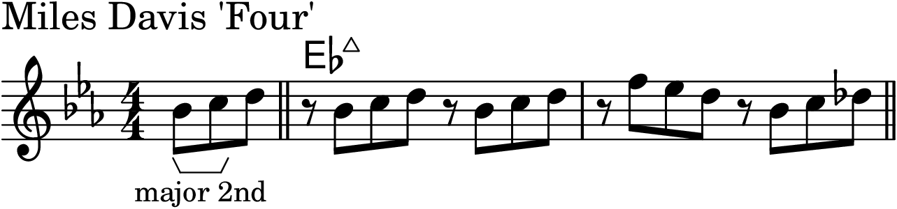
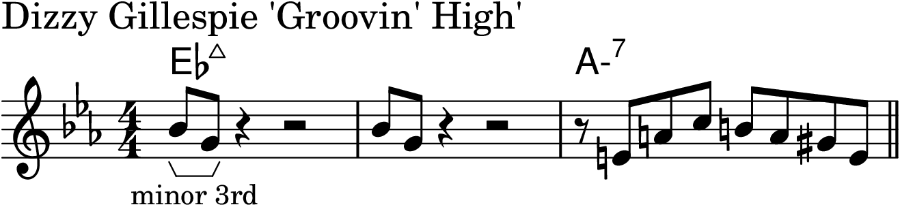
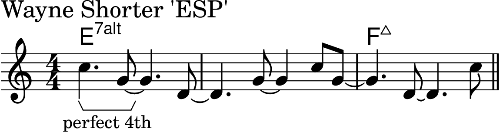
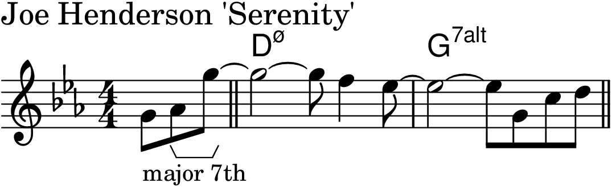
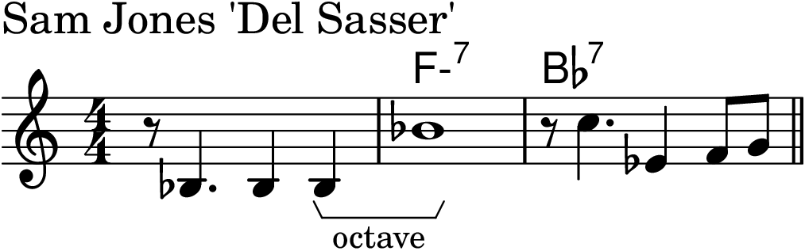
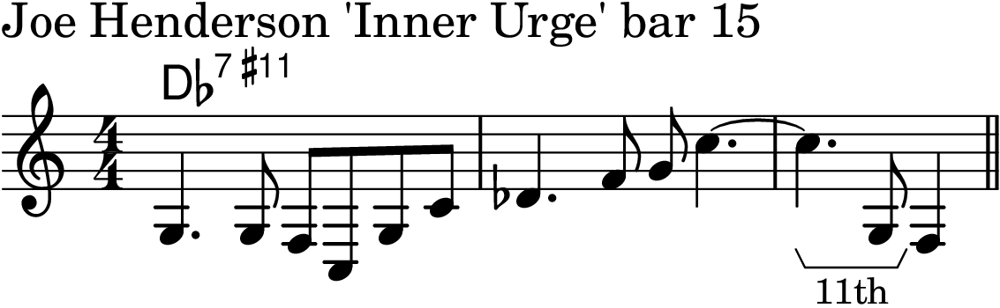
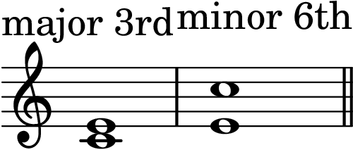

Chapter 1: Basic Theory
Back to Top
Intervals
Figure 1-1

Ascending minor 2nd

Descending minor 2nd

Ascending major 2nd

Descending major 2nd

Ascending minor 3rd

Descending minor 3rd

Ascending major 3rd

Descending major 3rd

Ascending perfect 4th

Descending perfect 4th

Ascending tritone
Descending tritone

Ascending perfect 5th
Descending perfect 5th

Ascending minor 6th

Descending minor 6th

Ascending major 6th

Descending major 6th

Ascending minor 7th

Descending minor 7th
Ascending major 7th

Descending major 7th

Ascending octave

Descending octave

Ascending minor 9th

Descending minor 9th

Ascending major 9th

Ascending major 10th

Descending 11th

Descending major 13th

Inverting Intervals
Figure 1-2

Figure 1-3

Figure 1-4
Figure 1-5

Triads
Figure 1-6

Figure 1-7